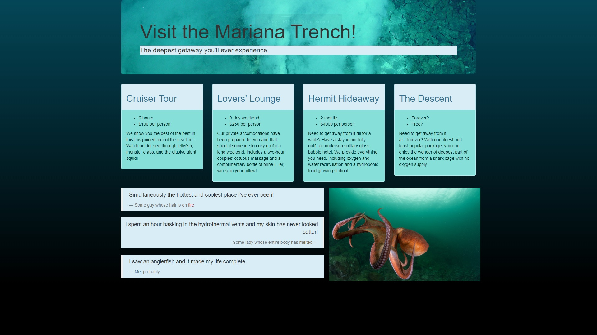

Projects: Week 1 (03/16/20 - 03/20/20)
-
Pet Project
A list of fun facts about my cats. One of our first projects was to write a page in basic HTML and include list elements. We then added color to the page using CSS stylesheets.
- HTML, CSS
-

My First Webpage
My "first" webpage (written with the help of Epicodus). In this project, we learned more about stylesheets, and how to include images and links in our pages.
- HTML, CSS
-

Cupcake Shop
The objective in this project was to create a website for a fictional cupcake shop (Mud Pie Shop in my example) and include a header, footer, and links to pages including flavors, reviews, and contact information.
- HTML, CSS
-

Vacation
After learning about Bootstrap styling, we wrote a page about a place we would like to go on vacation. On this page, you can choose from multiple excursion packages to visit the bottom of the Mariana Trench.
- HTML, CSS, Bootstrap
Objectives
I am pursuing a coding education at Epicodus and a career in the tech world because I feel I have a lot of insight to share, both in the creative and logical realms of programming. I want to expand my horizons and bring my love of color, style and functionality together to produce beautifully useful web applications.